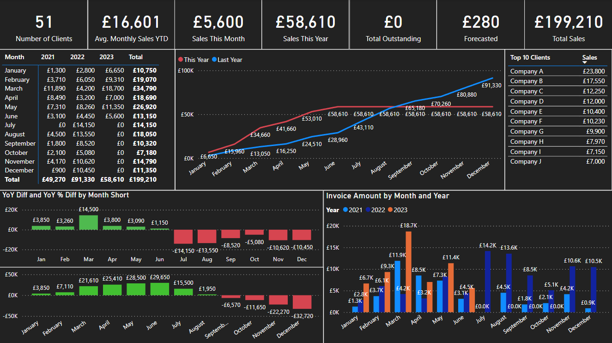
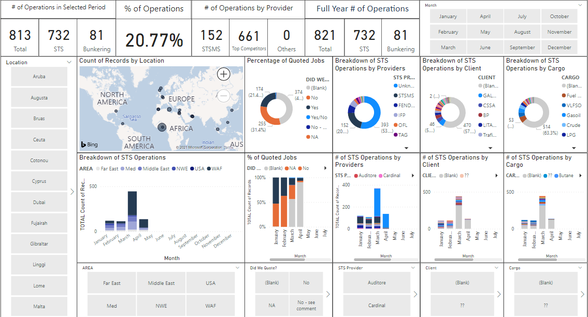
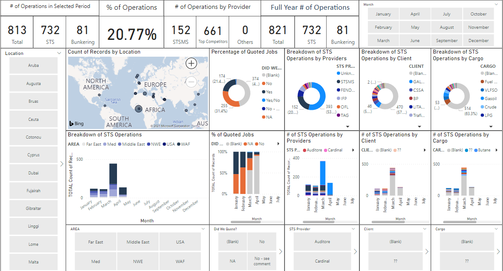

Freelance Career
Part of my role at a previous company was to develop reports and dashboard in the software Microsoft Power BI. At the start of the Covid-19 pandemic I decided I wanted to pursure my passion of Computer Studies at University. In order to fund this ambition I took my knowledge of Power BI decided to start working with businesses to develop Power BI dashboards to suit their needs. I am regularly meeting clients who are based in the UK and international, these clients range from small businesses to multimillion-pound companies, all of whom I work directly with to develop effective insightful reports.
Please find examples of dashboards I have created for clients below.  
